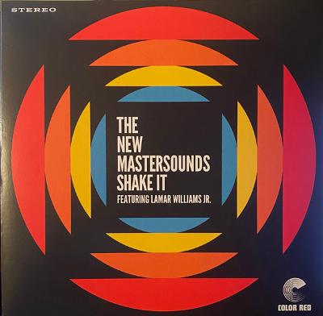

The New Mastersounds, Lamar Williams Jr. - Shake It

Discogs
Description
| Label | Color Red Records |
| Catalog number | ONRLP024 |
| Format | Vinyl, LP, Album |
| Released | 2019 |
| Original release date | 2019 |
| Genre | Jazz, Funk / Soul |
| Style | Funk, Jazz-Funk, Soul-Jazz |
Tracklist
| Position | Title |
|---|---|
| A1 | Shake It |
| A2 | Let's Go Back |
| A3 | Love They Deserve |
| A4 | Taking Me Down |
| A5 | Too Late To Worry |
| B1 | Layin' Low |
| B2 | Live Life Free |
| B3 | Kings & Queens |
| B4 | Permission To Land |
| B5 | On the Up (S.K.A.) |
| B6 | Lovely Daze |
Credits
| Role | Name |
|---|---|
| Art Direction | Mike Tallman |
| Bass Guitar | Pete Shand |
| Drums | Simon Allen |
| Guitar, Tambourine | Eddie Roberts |
| Keyboards | Joe Tatton |
| Mastered By | Doug Krebs |
| Mastered By [Vinyl] | Pete Norman |
| Percussion | Jeff Franca |
| Photography | Jason Melino |
| Producer | Eddie Roberts |
| Tenor Saxophone, Flute | Jason Mingledorff |
| Trumpet | Mike Olmos |
| Vocals | Lamar Williams Jr. |
| Written-By | Eddie Roberts |
| Written-By | Jason Mingledorff |
| Written-By | Joe Tatton |
| Written-By | Lamar Williams Jr. |
| Written-By | Mike Olmos |
| Written-By | Pete Shand |
| Written-By | Simon Allen |